How to Export a 3D Vista Project and Import it to AWS S3 for Making it Accessible as a Website.
Step 1: Exporting the 3D Vista Project
Open the 3D Vista software on your computer. Once the software is open, you will see a window displaying your recent projects. Select the project that you want to export to AWS S3.
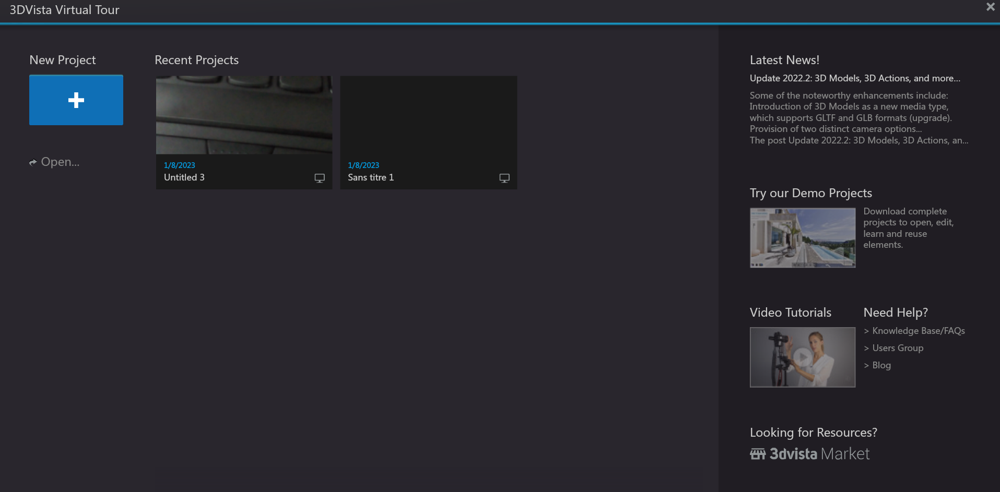
After opening your project, you will see a window similar to the one below:
 Click on the Publish button located at the bottom right of your screen. After clicking on this button, a new window will appear. Select the "Web / Mobile" option.
Click on the Publish button located at the bottom right of your screen. After clicking on this button, a new window will appear. Select the "Web / Mobile" option.
 Change the destination of the project to be exported by clicking on the button below.
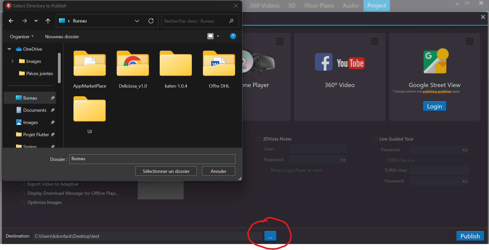
Then, choose the location where you want to save your exported project. In my case, I will save it on my desktop in the folder "AWS-S3-Virtual-tours". You can create your own folder
Note: The folder name should not contain spaces.
Change the destination of the project to be exported by clicking on the button below.
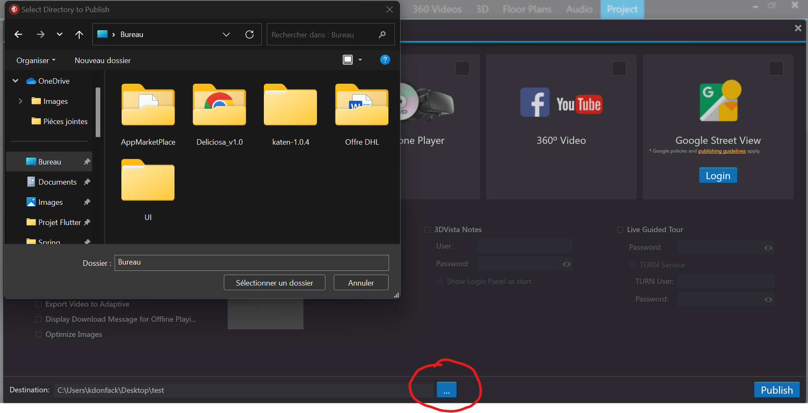
Then, choose the location where you want to save your exported project. In my case, I will save it on my desktop in the folder "AWS-S3-Virtual-tours". You can create your own folder
Note: The folder name should not contain spaces.
 Once the destination is selected, click on the Select a folder button to confirm your choice.
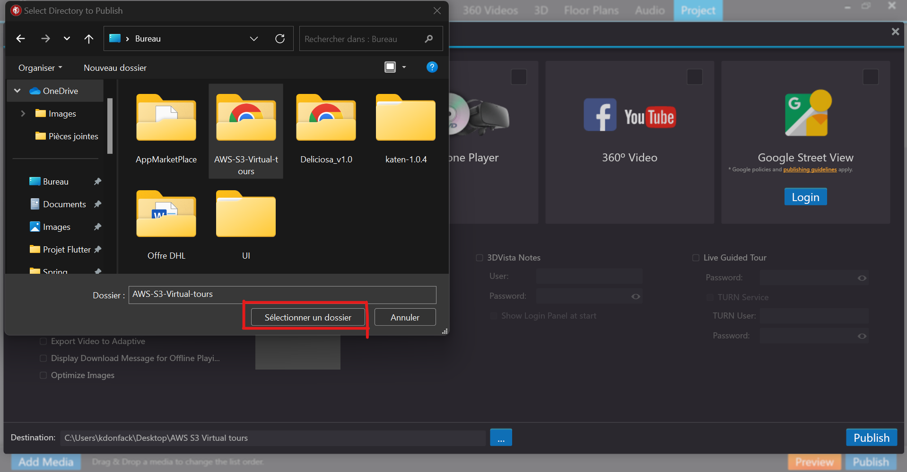
Then, click on the Publish button to start the process of exporting your project.
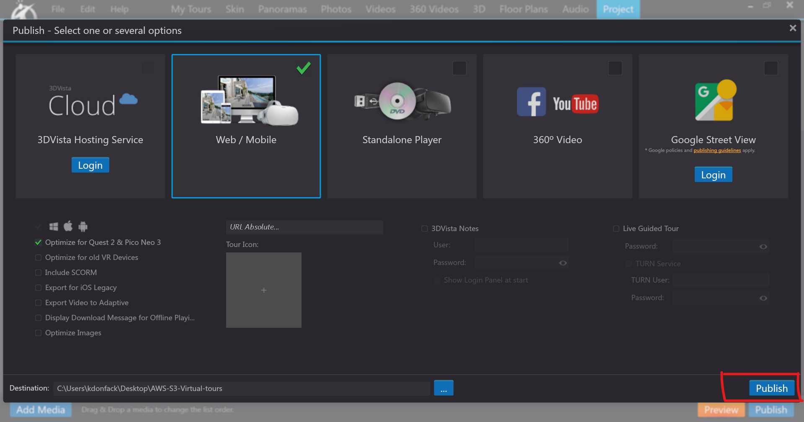
Your project has been successfully published to the destination you selected.
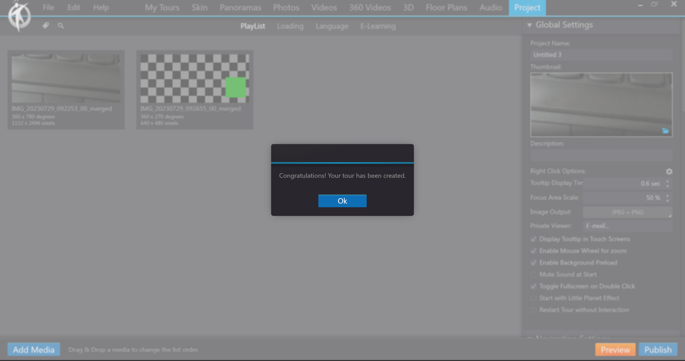
I chose the desktop as the destination to save my project in the folder "AWS-S3-Virtual-tours". Here's what the exported project looks like:
Once the destination is selected, click on the Select a folder button to confirm your choice.
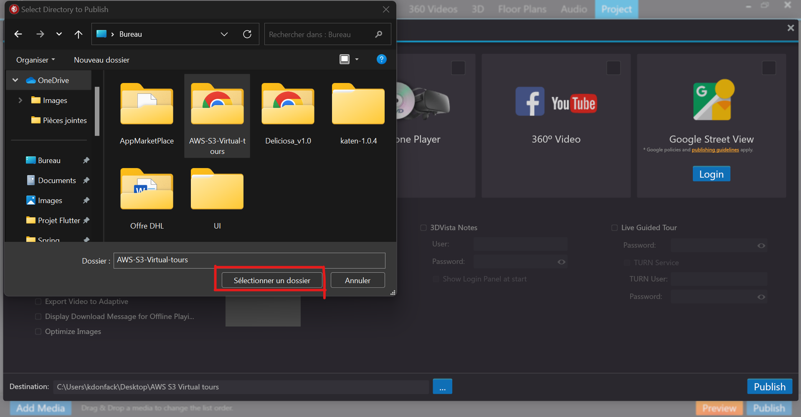
Then, click on the Publish button to start the process of exporting your project.
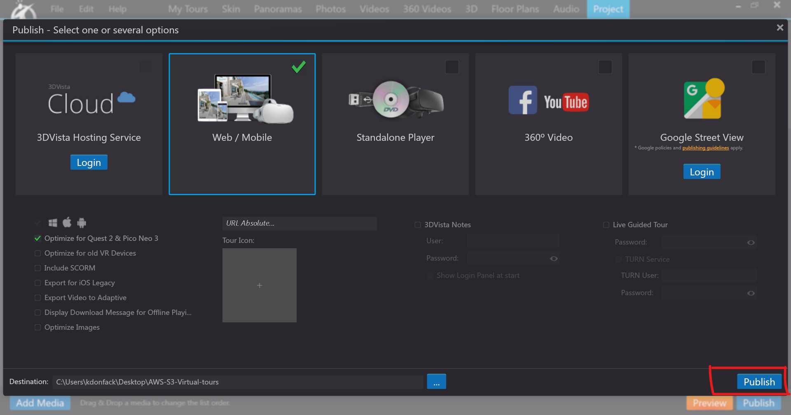
Your project has been successfully published to the destination you selected.
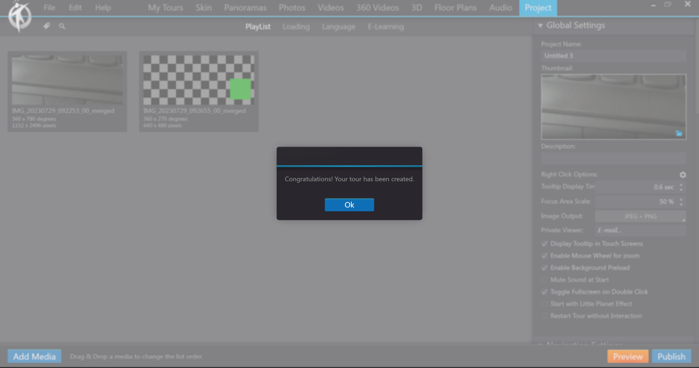
I chose the desktop as the destination to save my project in the folder "AWS-S3-Virtual-tours". Here's what the exported project looks like:
 Congratulations! You have successfully exported your 3D Vista project to your backup folder.
Congratulations! You have successfully exported your 3D Vista project to your backup folder.
Step 2: Creating an S3 Bucket
Start by logging in to your AWS account by going to the following address: https://console.aws.amazon.com/
Once on the AWS login interface, enter your AWS account login information.
 After logging in, you will see an interface similar to the one below:
After logging in, you will see an interface similar to the one below:
 In the search bar at the top left, type
In the search bar at the top left, type s3. Among the results that appear, click on the first option with s3.
 You will be redirected to the following page:
You will be redirected to the following page:
 Click on the "Create bucket" button. On the new page, enter the name of your bucket and choose the region where your bucket will be created. Select a region close to your users.
Note: The name of your bucket must be unique.
Click on the "Create bucket" button. On the new page, enter the name of your bucket and choose the region where your bucket will be created. Select a region close to your users.
Note: The name of your bucket must be unique.
 Next, scroll down to the section "Block Public Access settings for this bucket".
Next, scroll down to the section "Block Public Access settings for this bucket".
 Uncheck the "Block all public access" box, then check the box that says "I acknowledge..." Leave all other parameters with their default values. Scroll down to the bottom and click on the "Create bucket" button.
Uncheck the "Block all public access" box, then check the box that says "I acknowledge..." Leave all other parameters with their default values. Scroll down to the bottom and click on the "Create bucket" button.
 Your S3 Bucket has been created successfully.
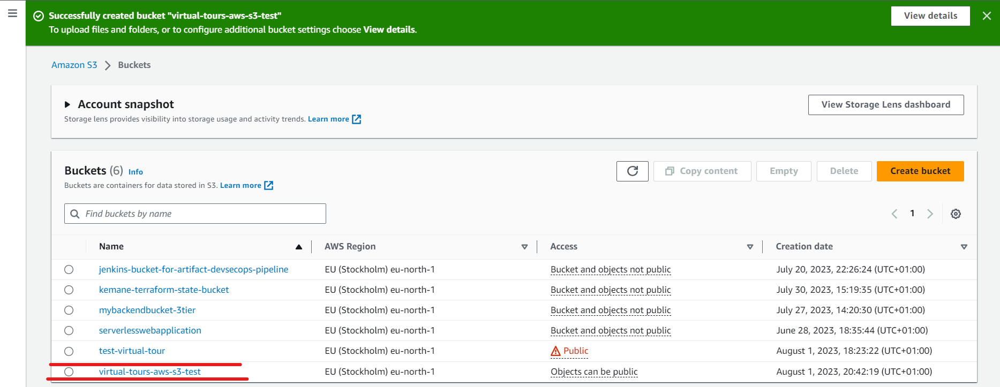
Your S3 Bucket has been created successfully.
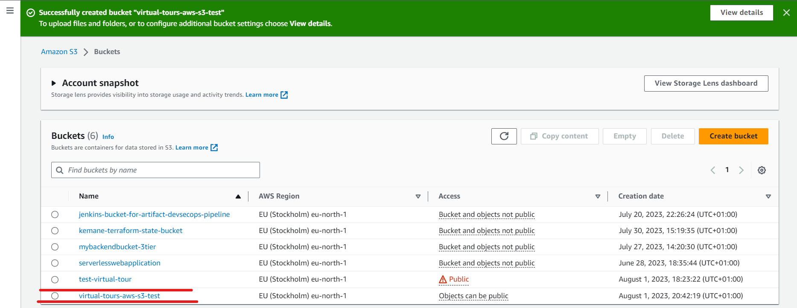